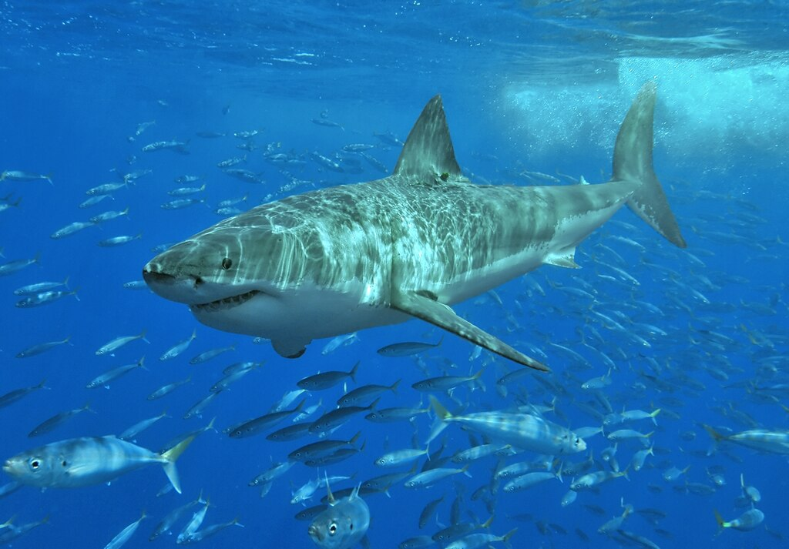
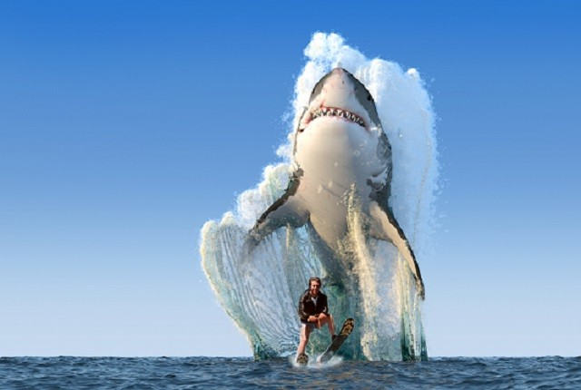
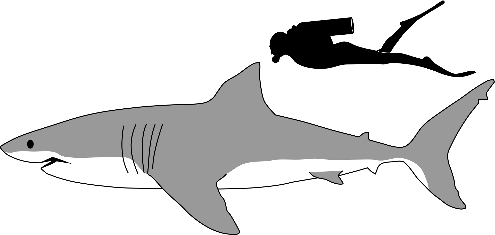
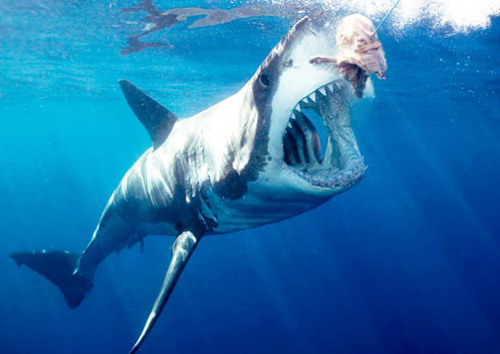
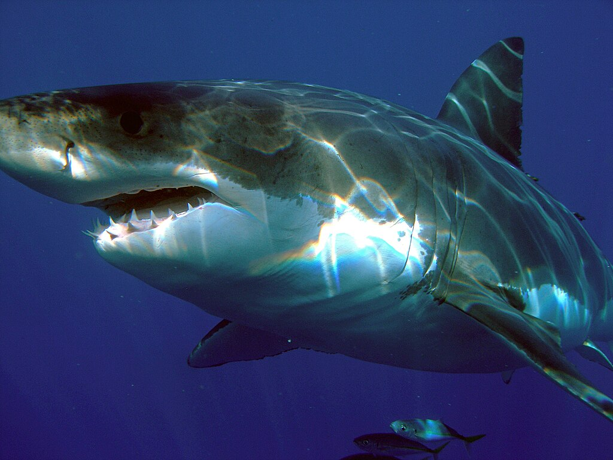
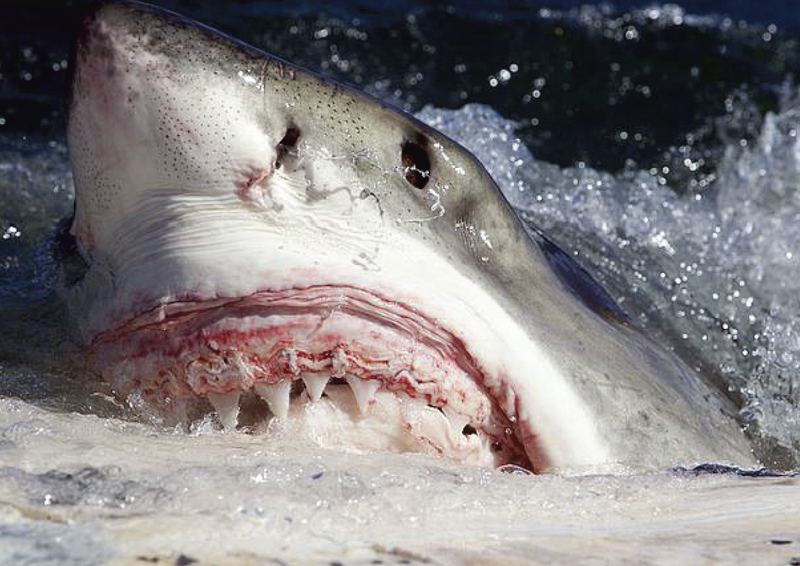
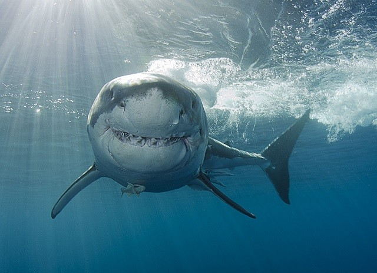
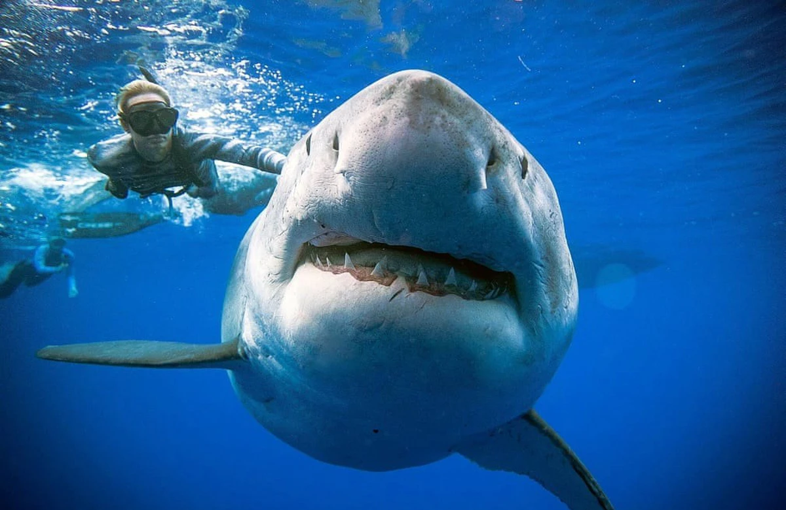
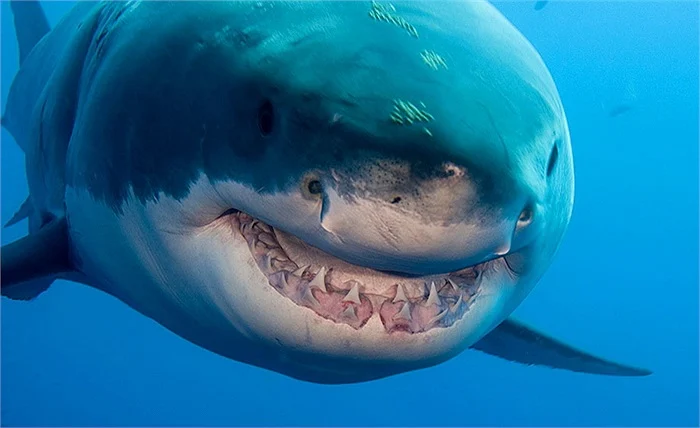

🦈 Cá Mập Trắng Lớn (Great White Shark) - Sát Thủ Đại Dương
🧬 Tổng quan:
Tên khoa học: Carcharodon carcharias
Tên gọi khác: Cá mập trắng, Cá mập trắng vĩ đại
Phân bố: Đại dương ôn đới và nhiệt đới trên toàn thế giới, tập trung ở vùng biển ngoài khơi Nam Phi, Úc, California và Địa Trung Hải.

📏 Kích thước và trọng lượng:
Chiều dài: Trung bình từ 4 đến 6 mét, có thể đạt tới 7 mét.

Trọng lượng: Khoảng 680 - 1.100 kg, có thể lên đến 2.000 kg ở những cá thể lớn.

🍖 Chế độ ăn uống:
Thức ăn chính: Hải cẩu, sư tử biển, cá heo, cá ngừ, cá đuối, tùa biển và đôi khi là xác động vật.
Cách săn mồi: Tấn công bất ngờ từ phía dưới con mồi, sử dụng lực cắn mạnh mẽ.

🏠 Môi trường sống:
Thường sinh sống ở các vùng nước ven bờ và ngoài khơi ở độ sâu từ 30 - 50 mét.
Có khả năng chịu được cả vùng nước lạnh lẫn nước ấm.

🔎 Đặc điểm nổi bật:
Hàm răng: Sở hữu khoảng 300 chiếc răng sắc nhọn, được sắp xếp thành nhiều hàng.

Khứu giác: Rất nhạy bén, có thể ngửi thấy máu ở khoảng cách vài km.
Tốc độ bơi: Có thể đạt tới 56 km/h trong các đợt tấn công ngắn.

🛡️ Tình trạng bảo tồn:
IUCN: Đang ở mức "Dễ Tổn Thương" (Vulnerable).
Mối đe dọa: Săn bắt, mắc vào lưới cá và mất môi trường sống.
Bảo tồn: Nhiều quốc gia đã ban hành luật bảo vệ và giám sát hoạt động săn bắt.

🌍 Vai trò trong hệ sinh thái:
Đóng vai trò quan trọng trong chuỗi thức ăn biển, giúp duy trì sự cân bằng sinh thái bằng cách kiểm soát số lượng các loài động vật biển khác.

Trải nghiệm thú vị với cá béo trắng=)))
Seal Island ở Nam Phi là "sân nhà" của cá mập trắng
by: Thanh Đẹp Trai